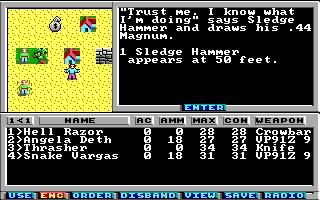

Game Tutorial Step 11: Adding fixed encounters
With Action class 3 you can add fixed encounters to your map. Fixed simply means that they are not random. You can fight the monsters in a fixed encounter once and that's it. We will create such a fixed encounter in this example.
First find a place on the map where you want your fixed encounter to take place. Set this square to action class 3 and action 00. The tile doesn't matter because the game draws the sprite itself depending on the monster type. Then create the fixed encounter code:
<actions actionClass="3">
<encounter id="0"
friendly="true"
message="16"
properName="true"
monster1="3"
maxGroupSize1="1"
visibleDistance="100"
hitDistance="30"
newActionClass="0"
newAction="0" />
</actions>
This creates a friendly monster (That means you have to attack first) which is visible from 100 feets and can hit you from 30 feets. The proper name of the monster is displayed instead of just a generic monster type name. When the fight begins message string 16 is displayed. This fixed encounter consists of just one group (You can add up to three groups by using monster2, monster3, maxGroupSize1 and maxGroupSize2) and refers to monster 3 which we will create now.
Go to the beginning of the monsters section you already created for the random encounters in the previous step and add the monster:
<monster id="3"
name="Sledge Hammer"
ac="2"
experience="25"
skill="40"
weaponType="3"
fixedDamage="0"
randomDamage="6"
maxGroupSize="1"
monsterType="3"
picture="6" />
Add the new string and that's it:
<string id="16">"Trust me. I know what I'm doing" says Sledge Hammer and draws his .44 Magnum.\r</string>
Pack the game and start up Wasteland. When you are now in the range of 100 feet around the square you placed the fixed counter on you will see a humanoid. Start an encounter and you can fight against him.
You can download the current state of the map here: map01.xml.
